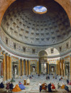
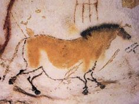

Oeuvres Brunelleschi
Inspirations
Années
Dôme Cathédrale de Florence

Mesures des ruines et Palais Rome

1420-1436
Peuples préhistoriques et peuples primitifs; Amérique ancienne
"Les tout premiers débuts de l'art sont aussi mystérieux que ceux du langage. Si l'on admet que l'art consiste à bâtir des temples et des maisons, à faire des tableaux et des sculptures ou à tisser d'après un motif ornemental, il n'est pas de peuple qui n'ait élaboré quelque forme d'art. Si en revanche, on considère l'art comme une sorte de luxe magnifique, destiné aux musées et aux expositions, ou à l'ornement d'une pièce d'apparat, nous devons nous rendre compte que l'usage du mot est tout à fait récent et que nombre des plus grands bâtisseurs, peintres et sculpteurs du passé n'y ont jamais songé. C'est l'architecture qui illustre le mieux ces deux conceptions. Nous savons tous qu'il y a de beaux bâtiments et que certains sont de véritables oeuvres d'art. Il n'y a cependant guère d'édifice qui n'ait été bâti dans un but déterminé. Ceux qui les emploient comme lieux de réunion ou comme habitation les considèrent surtout du point de vue utilitaire. Mais, en dehors de cela, ils peuvent aimer ou ne pas aimer le dessin ou les proportions d'un édifice, apprécier les efforts du bon architecte qui, non seulement vise à une construction pratique, mais qui désire aussi qu'elle soit "bien". Dans le passé, peintures et sculptures ont souvent été envisagées de cette manière. On n'y voyait pas seulement des oeuvres d'art mais des objets créés dans un but précis. Celui qui jugerait une maison sans savoir à quoi elle est destinée serait un pauvre juge. Nous n'avons pas davantage (...)"
Une certaine forme d'art existe dans chaque recoin du monde (..)
Chacun sait que l'égypte est le pays des pyramides (..)